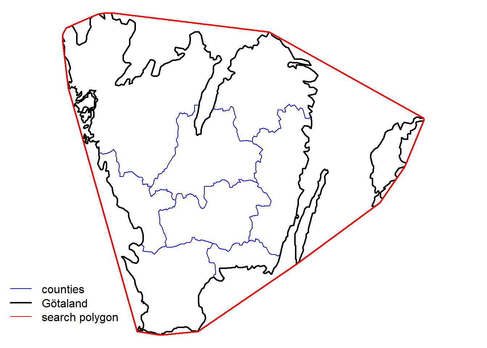
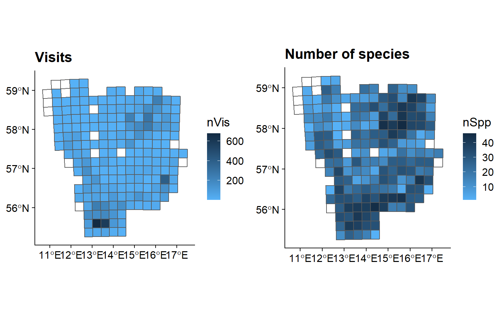

2 Example with opportunistic data on Dragonflies
In this example we are interested in exploring opportunistically collected data from the Swedish citizen science species observation portal - Artportalen.
2.1 Name searching
To begin with, we want be sure there is an unequivocal way to find the species within the order Odonata (dragonflies) and nothing else, so let’s search for “odonata”:
sx <- search_fulltext("odonata")
sx$data[, c("guid", "scientificName", "rank", "occurrenceCount")]## [1] "https://species.biodiversitydata.se/ws/search.json?q=odonata&fq=idxtype%3ATAXON"## guid scientificName rank occurrenceCount
## 1 10072832 Odonata associated gemycircularvirus 2 species 0
## 2 7367071 Ramalina fastigiata var. odonata Hue variety 0
## 3 789 Odonata order 14121
## 4 8062407 Bdellodes odonata Wallace & Mahon, 1976 species 0
## 5 9829523 Odonata associated gemycircularvirus 1 species 0We quickly see there that other taxonomic levels appear too, and also
species that look suspiciously as not belonging to dragonflies. But
there is only one order. Let’s refine the search. To know which search
fields we can use to filter the search we use the function
sbdi_fields(fields_type = "general"). The search field we are looking
for is “order_s.”
sx <- search_fulltext(fq = "order_s:Odonata", page_size = 10)
sx$data[, c("scientificName", "rank", "occurrenceCount")]## [1] "https://species.biodiversitydata.se/ws/search.json?fq=order_s%3AOdonata&fq=idxtype%3ATAXON&pageSize=10"## guid scientificName rank occurrenceCount
## 1 11034676 Notoneura xanthe Lieftinck, 1938 species 0
## 2 11034731 Protoneura bifurcata Sjöstedt, 1918 species 0
## 3 11034937 Oxygomphus chapini Klots, 1944 species 0
## 4 11035128 Xerolestes pallidus (Rambur, 1842) species 0
## 5 11035335 Mesothemis mithroides Brauer, 1900 species 0
## 6 11029091 Paracercion luzonicum (Asahina, 1968) species 0
## 7 11029136 Onychargia stellata Ris, 1915 species 0
## 8 11029184 Nehalennia sophia Selys, 1840 species 0
## 9 11029206 Lestes lundquisti Lieftinck, 1949 species 0
## 10 11029310 Lestes concinnus Selys species 0Now we can download the taxonomic data (note that the search is case-sensitive):
tx <- taxinfo_download("order_s:Odonata",
fields = c("guid", "order_s","genus_s", "specificEpithet_s",
"scientificName", "canonicalName_s", "rank"),
verbose = FALSE)
tx <- tx[tx$rank == "species" & tx$genusS != "",] ## restrict to species and not hybridsYou can save the tx object as the complete species list for later use.
2.2 Filter the search to get the observations
We start by searching for the data resource we are interested in using
the function pick_filter(). This is an interactive query guiding you
through the many resources available to filtering your query (data
resources, spatial layers, and curated species lists).
# follow the instructions
fq_str <- pick_filter("resource") Follow the instructions. Your choices here would have been “in3” –>
“dr5.” Your variable fq_str will now contain a string
“data_resource_uid:dr5.”
We only want to look at data from year 2000 to 2010:
y1 <- 2000
y2 <- 2010
fq_str <- c(fq_str, paste0("year:[", y1, " TO ", y2,"]"))
# Note the square brackets are hard limitsWe also want to filter spatially for Southern Sweden (Götaland).
Vector spatial layers (eg. polygons) can be imported in a number of
different ways. SBDI APIs take as search input polygons in the so-called
WKT Well Known
Text
format. So the first step is to load a vector layer and transform it
into a WKT string. You could instead use the data we provid in the
SBDI4R package data("swe").
data("swe",package = "SBDI4R")
wGotaland <- swe$Counties$LnNamn %in% c("Blekinge", "Gotlands", "Hallands",
"Jönköpings", "Kalmar", "Kronobergs",
"Östergötlands", "Skåne", "Västra Götalands")
gotaland_c <- swe$Counties[wGotaland,]There are details about this polygon that we need to take care before. The WKT string should not be too long to be accepted by the API service. Also, the polygon we just got is projected in the coordinate system SWEREF99 TM, and the API service only accepts coordinates in a geodesic coordinate system WGS84. Let’s construct the WKT string:
# transform the CRS
gotaland_c <- st_transform(gotaland_c,
crs = st_crs(4326))
# disolve the counties into one polygon
gotaland <- st_union(gotaland_c)
# create a convex hull of the polygon to simplify the geometry and
# reduce the length of the WKT string
gotaland_ch <- st_convex_hull(gotaland)
# cast it as MULTIPOLYGON as this is what SBDIs API need
# NOTE: as of today, the SBDI APIs will only work properly if the polygon is
# submitted as a MULTIPOLYGON
gotaland_ch <- st_cast(gotaland_ch, to = "MULTIPOLYGON")
# create WKT string
wkt <- st_as_text(gotaland_ch)The WKT string then looks like this:
## [1] "MULTIPOLYGON (((13.33575 55.34003, 12.81633 55.38594, 11.25342 58.35786, 11.13161 58.90942, 11.13145 59.01184, 11.21142 59.0897, 11.31566 59.11651, 11.82032 59.23553, 11.94833 59.26237, 12.06197 59.27159, 12.23104 59.27357, 15.79383 59.03876, 15.84306 59.02498, 19.2889 57.99043, 19.3058 57.96888, 18.90037 57.44014, 18.86704 57.39753, 18.3725 57.00678, 18.30044 56.9528, 16.40805 56.20229, 14.19057 55.38557, 13.33575 55.34003)))"
Next, we download the observations using the command occurrences(),
but be aware that the search fields may not be the same as those used to
search for taxa. We therefore recommend using the function
sbdi_fields("occurrence") to find out which search fields we can use
to filter for occurrences. Here we see that the field we need this time
is “order.”
xf <- occurrences(taxon = "order:Odonata",
fq = fq_str,
wkt = wkt,
extra = "collector",
email = "sbdi4r-test@biodiversitydata.se",
download_reason_id = 10)We have now downloaded the data locally and depending on your configuration this will be cached on your computer. However, as the search and download could take long time, we recommend to save the data locally. appropriate
save(xf, file = "an_appropriate_name.rdata")
load(file = "an_appropriate_name.rdata")2.3 Quality and fit-for-use check
Before we can use the observation records we need to know if the observation effort (sampling effort) has varied over time and in space. We can approximate observation effort from the data by defining field visits i.e. occasions at which an observer has sampled observations. We reconstruct field visits (that is, assign each observation a visitUID) using using the package BIRDS. Additionally we want the data to be summarized over a grid of 25 km (provided through the SBDI4R package). The following functions will perform many different summaries at the same time. Please refer to the BIRDS package documentation for more detail.
remotes::install_github("Greensway/BIRDS")## xfun (0.24 -> 0.26 ) [CRAN]
## digest (0.6.27 -> 0.6.28) [CRAN]
## stringi (1.7.4 -> 1.7.5 ) [CRAN]
## mime (0.11 -> 0.12 ) [CRAN]
## tibble (3.1.3 -> 3.1.5 ) [CRAN]
## matrixStats (0.59.0 -> 0.61.0) [CRAN]
## e1071 (1.7-7 -> 1.7-9 ) [CRAN]
## robustbase (0.93-8 -> 0.93-9) [CRAN]
## tidyr (1.1.3 -> 1.1.4 ) [CRAN]
## rgdal (1.5-23 -> 1.5-27) [CRAN]
##
## There are binary versions available but the source versions are later:
## binary source needs_compilation
## stringi 1.7.4 1.7.5 TRUE
## tibble 3.1.4 3.1.5 TRUE
##
## package 'xfun' successfully unpacked and MD5 sums checked
## package 'digest' successfully unpacked and MD5 sums checked
## package 'mime' successfully unpacked and MD5 sums checked
## package 'matrixStats' successfully unpacked and MD5 sums checked
## package 'e1071' successfully unpacked and MD5 sums checked
## package 'robustbase' successfully unpacked and MD5 sums checked
## package 'rgdal' successfully unpacked and MD5 sums checked
##
## The downloaded binary packages are in
## C:\Users\Alejandro\AppData\Local\Temp\RtmpEfe7wo\downloaded_packages
##
checking for file 'C:\Users\Alejandro\AppData\Local\Temp\RtmpEfe7wo\remotes25ec444518d9\Greensway-BIRDS-8a336fd/DESCRIPTION' ...
checking for file 'C:\Users\Alejandro\AppData\Local\Temp\RtmpEfe7wo\remotes25ec444518d9\Greensway-BIRDS-8a336fd/DESCRIPTION' ...
v checking for file 'C:\Users\Alejandro\AppData\Local\Temp\RtmpEfe7wo\remotes25ec444518d9\Greensway-BIRDS-8a336fd/DESCRIPTION'
##
- preparing 'BIRDS': (1.9s)
## checking DESCRIPTION meta-information ...
checking DESCRIPTION meta-information ...
v checking DESCRIPTION meta-information
##
- installing the package to process help pages
##
- saving partial Rd database (13.6s)
##
- checking for LF line-endings in source and make files and shell scripts
##
- checking for empty or unneeded directories
##
Removed empty directory
Removed empty directory 'BIRDS/data-raw'
##
- building 'BIRDS_0.2.2.tar.gz'
##
## library(BIRDS)OB <- organiseBirds(xf$data, sppCol = "species" ,
# We only want observations identified at the species level
taxonRankCol = "rank", taxonRank = "species",
# the visits are defined by collector and named locality
idCols = c("locality", "collector"),
timeCols = c("year", "month", "day"),
xyCols = c("longitude","latitude") )
# We don't need the whole grid, just the piece that overlaps our searching polygon
wInt <- unlist(st_intersects(gotaland, Sweden_Grid_25km_Wgs84))
gotaland_grid25 <- Sweden_Grid_25km_Wgs84[wInt,]
SB <- summariseBirds(OB, grid = gotaland_grid25, spillOver = "unique")Once summarised, we can see over space and for a few selected years how the number of observations is distributed:
maxC <- max(SB$spatial$nObs, na.rm = TRUE)
palBW <- leaflet::colorNumeric(c("white", "navyblue"),
c(0, maxC),
na.color = "transparent")
oldpar <- par()
par(mar = c(1,1,1,1), mfrow=c(1,3))
plot(SB$spatial$geometry, col=palBW(SB$spatial$nObs),
border = "grey", main="All years") ## with palette
legend("bottomleft", inset = c(0,0.05),
legend = round(seq(0, maxC, length.out = 5)),
col = palBW(seq(0, maxC, length.out = 5)),
title = "Number of \nobservations", pch = 15, bty="n")
## or export other combinations, e.g. one map per observed year
yearlySp <- exportBirds(SB,
dimension = "spatial",
timeRes = "yearly",
variable = "nObs",
method = "sum")
maxC <- max(yearlySp$'2005', na.rm = TRUE)
palBW <- leaflet::colorNumeric(c("white", "navyblue"),
c(0, maxC),
na.color = "transparent")
plot(yearlySp$geometry, col=palBW(yearlySp$'2005'),
border = "grey",main="2005")
legend("bottomleft", inset = c(0,0.05),
legend = round(seq(0, maxC, length.out = 5)),
col = palBW(seq(0, maxC, length.out = 5)),
border = "grey",
title = "Number of \nobservations", pch = 15, bty="n")
maxC <- max(yearlySp'2010', na.rm = TRUE)
palBW <- leaflet::colorNumeric(c("white", "navyblue"),
c(0, maxC),
na.color = "transparent")
plot(yearlySp$geometry, col=palBW(yearlySp$'2010'),
border = "grey",main="2010")
legend("bottomleft", inset = c(0,0.05),
legend = round(seq(0, maxC, length.out = 5)),
col = palBW(seq(0, maxC, length.out = 5)),
border = "grey",
title = "Number of \nobservations", pch = 15, bty="n")
par(oldpar)
We now want to use the number of field visits as the measure for sampling effort. :
library(cowplot)
library(ggplot2)
library(colorRamps)
library(gridExtra)
vis <- ggplot(data = SB$spatial, aes( fill = nVis)) +
geom_sf() +
ggtitle("Visits") +
scale_fill_gradient(low = "#56B1F7",
high = "#132B43",
na.value = NA) +
theme(plot.margin = margin(1, 1, 1, 1, "pt")) +
theme_cowplot()
spp <- ggplot(data = SB$spatial, aes( fill = nSpp)) +
geom_sf() +
ggtitle("Number of species") +
scale_fill_gradient(low = "#56B1F7",
high = "#132B43",
na.value = NA) +
theme(plot.margin = margin(1, 1, 1, 1, "pt")) +
theme_cowplot()
grid.arrange(vis, spp, ncol = 2)
2.3.0.1 Temporal check
We see that SB contains an element called SB$temporal that contains
a daily time series with time-specific rows when there is information.
xts also supports day time, but dating below day resolution is not yet
implemented in the BIRDS package.
sb.xts <- SB$temporal
head(sb.xts, 5)## nObs nVis nSpp
## 2000-03-24 1 1 1
## 2000-04-05 4 3 3
## 2000-04-06 11 6 3
## 2000-04-10 1 1 1
## 2000-04-12 3 3 1Sub-setting is convenient in xts as you can do it with its dates and
with a / for a range of dates.
sb.xts["2010-09-07"] #a specific day## nObs nVis nSpp
## 2010-09-07 19 10 12sb.xts["2010-09-01/2010-09-15"] #for a period## nObs nVis nSpp
## 2010-09-01 46 19 14
## 2010-09-02 28 14 12
## 2010-09-03 23 10 10
## 2010-09-04 64 20 18
## 2010-09-05 74 27 12
## 2010-09-06 18 5 11
## 2010-09-07 19 10 12
## 2010-09-08 13 6 8
## 2010-09-09 32 12 14
## 2010-09-10 1 1 1
## 2010-09-11 16 9 8
## 2010-09-12 20 10 8
## 2010-09-13 14 5 9
## 2010-09-14 1 1 1
## 2010-09-15 3 3 2sb.xts["2010-09"] #a specific month## nObs nVis nSpp
## 2010-09-01 46 19 14
## 2010-09-02 28 14 12
## 2010-09-03 23 10 10
## 2010-09-04 64 20 18
## 2010-09-05 74 27 12
## 2010-09-06 18 5 11
## 2010-09-07 19 10 12
## 2010-09-08 13 6 8
## 2010-09-09 32 12 14
## 2010-09-10 1 1 1
## 2010-09-11 16 9 8
## 2010-09-12 20 10 8
## 2010-09-13 14 5 9
## 2010-09-14 1 1 1
## 2010-09-15 3 3 2
## 2010-09-17 3 2 3
## 2010-09-18 9 5 5
## 2010-09-19 12 7 5
## 2010-09-21 3 2 3
## 2010-09-22 4 4 2
## 2010-09-23 3 3 2
## 2010-09-24 10 5 5
## 2010-09-25 7 4 6
## 2010-09-26 7 6 2
## 2010-09-28 2 2 2
## 2010-09-29 5 3 4
## 2010-09-30 2 2 2The package xts has several tools for converting to different time
periods. Here we use apply.monthly to obtain the total number of
observations and visits per month. The plot command for an object of
calss xts provides a many features. This makes it fairly easy to
customize your plots. Read more in ?plot.xts.
library(xts)
obs.m <- apply.monthly(sb.xts$nObs, "sum", na.rm = TRUE)
vis.m <- apply.monthly(sb.xts$nVis, "sum", na.rm = TRUE)
plot(obs.m,
col = "darkblue",
grid.ticks.on = "month",
major.ticks = "year",
grid.col = "lightgrey",
main = "Total number of daily observations and visits per month")
lines(vis.m, col = "orange", lwd = 2, on = 1)2.4 Species trends
We can now look at some particular species and ask whether those have changed in occurrence over time:
speciesSummary(SB)[,1:4]## species nCells nObs nVis
## 1 Aeshna affinis 3 32 27
## 2 Aeshna caerulea 6 13 13
## 3 Aeshna cyanea 128 896 861
## 4 Aeshna grandis 156 1765 1735
## 5 Aeshna isoceles 25 172 169
## 6 Aeshna juncea 101 366 353
## 7 Aeshna mixta 81 677 646
## 8 Aeshna serrata 13 39 38
## 9 Aeshna subarctica 35 108 99
## 10 Aeshna viridis 13 40 35
## 11 Anax imperator 51 559 515
## 12 Anax parthenope 2 5 5
## 13 Brachytron pratense 93 505 492
## 14 Calopteryx splendens 102 682 628
## 15 Calopteryx virgo 124 1061 1007
## 16 Coenagrion armatum 23 74 67
## 17 Coenagrion hastulatum 118 941 908
## 18 Coenagrion johanssoni 15 75 70
## 19 Coenagrion lunulatum 42 111 104
## 20 Coenagrion puella 124 1415 1360
## 21 Coenagrion pulchellum 124 1439 1392
## 22 Cordulegaster boltonii 75 500 493
## 23 Cordulia aenea 122 1072 1053
## 24 Enallagma cyathigerum 149 1717 1630
## 25 Epitheca bimaculata 16 36 35
## 26 Erythromma najas 97 774 741
## 27 Erythromma viridulum 13 143 126
## 28 Gomphus vulgatissimus 48 160 155
## 29 Ischnura elegans 124 1351 1294
## 30 Ischnura pumilio 22 110 95
## 31 Lestes dryas 52 214 206
## 32 Lestes sponsa 147 1454 1385
## 33 Lestes virens 50 201 188
## 34 Leucorrhinia albifrons 47 185 180
## 35 Leucorrhinia caudalis 34 143 136
## 36 Leucorrhinia dubia 85 338 320
## 37 Leucorrhinia pectoralis 85 368 351
## 38 Leucorrhinia rubicunda 96 445 432
## 39 Libellula depressa 110 569 546
## 40 Libellula fulva 9 101 90
## 41 Libellula quadrimaculata 160 2096 2047
## 42 Nehalennia speciosa 3 34 33
## 43 Onychogomphus forcipatus 76 447 445
## 44 Orthetrum cancellatum 129 1079 1025
## 45 Orthetrum coerulescens 76 253 246
## 46 Platycnemis pennipes 92 545 529
## 47 Pyrrhosoma nymphula 127 974 945
## 48 Somatochlora arctica 28 45 42
## 49 Somatochlora flavomaculata 90 427 420
## 50 Somatochlora metallica 109 621 612
## 51 Sympecma fusca 50 269 264
## 52 Sympecma paedisca 2 5 5
## 53 Sympetrum danae 136 803 768
## 54 Sympetrum flaveolum 82 302 295
## 55 Sympetrum fonscolombii 2 2 2
## 56 Sympetrum sanguineum 137 1268 1224
## 57 Sympetrum striolatum 84 311 298
## 58 Sympetrum vulgatum 128 1072 1016We pick two species and compare their trends in number of visits where the species where reported, relative to the total number of visits.
library(dplyr)
sppCount <- obsData(OB) |>
group_by(year, visitUID) |>
summarise("focalCountLq" = sum(scientificName == "Libellula quadrimaculata"),
"focalCountSd" = sum(scientificName == "Sympetrum sanguineum"),
"sppLength" = length(unique(scientificName)),
.groups = "drop") |>
ungroup() |>
group_by(year) |>
summarise("focalCountLq" = sum(focalCountLq),
"focalCountSd" = sum(focalCountSd),
"nVis" = length(unique(visitUID)),
"relCountLq" = focalCountLq / nVis,
"relCountSd" = focalCountSd / nVis,
.groups = NULL)
oldpar <- par(no.readonly = TRUE)
plot(sppCount$year, sppCount$relCountLq,
type = "l", lwd = 3, xlab = "Year",
ylab = "Relative number of visits with observations",
ylim=c(0, max(sppCount$relCountLq)),
xaxp=c(2000, 2010, 10))
lines(sppCount$year, sppCount$relCountSd, lwd=3, col="#78D2EB")
legend("bottomright",
legend=c("Libellula quadrimaculata","Sympetrum sanguineum"),
text.font = 3, col = c("black", "#78D2EB"), lwd = 3, bty = "n")
par(oldpar)